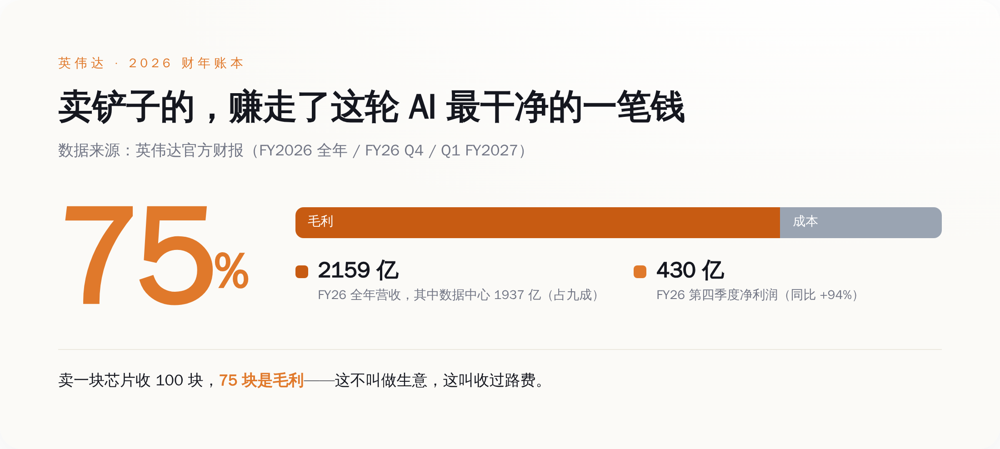
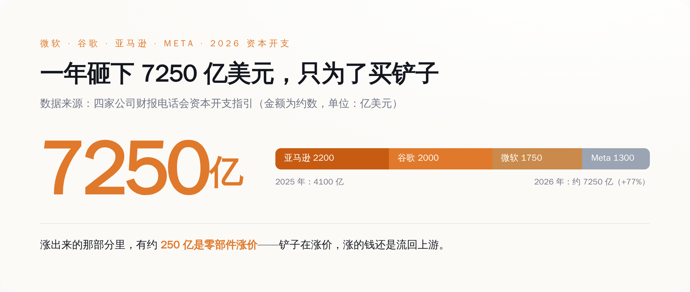
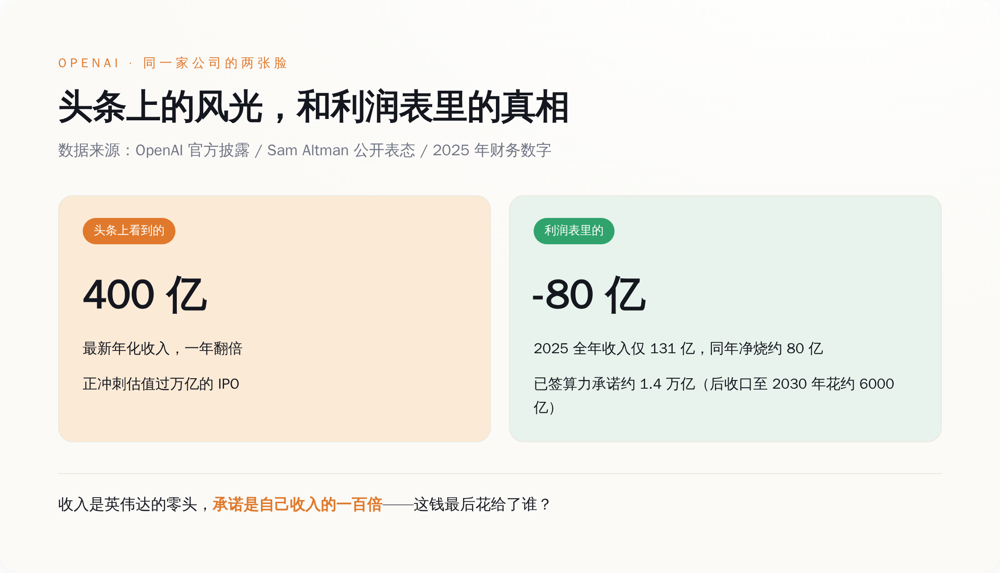
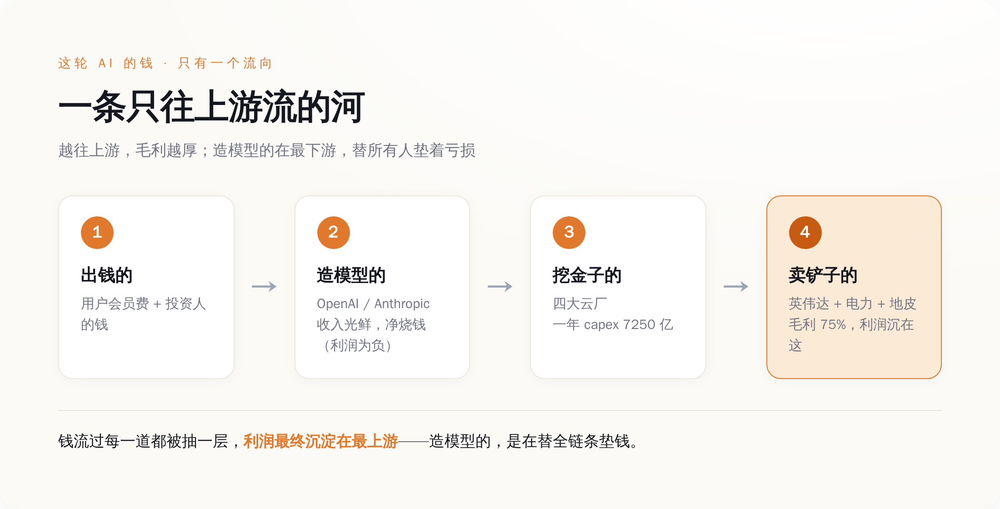

一、先看谁在真赚钱：那个卖铲子的，数钱数到手抽筋
我们先不谈情怀，谈钱。谁赚到钱了？
英伟达。
看它自己交出来的账本，2026 财年全年营收 2159 亿美元，同比涨了 65%。这里头，数据中心业务一家就贡献了 1937 亿——占全公司营收九成。翻译成人话：英伟达现在基本上就是一家"AI 芯片公司"，别的业务加起来都是零头（游戏显卡？那是它上辈子的事了）。
增速还在往上窜。到了 2027 财年第一季度（截止今年 4 月 26 号），单季营收 816 亿美元，同比涨 85%；其中数据中心营收 752 亿，同比涨 92%。它自己给下一季度的指引是 910 亿。一个季度赚的钱，比很多国家一年的财政收入还多，而且还在加速。
但真正吓人的不是营收，是毛利率。
看它 2026 财年第四季度（就是上面那个 Q1 FY27 的前一个季度）的 GAAP 毛利率：75%。这是个什么概念？意思是它卖一块 AI 芯片，收你 100 块，成本只有 25 块，剩下 75 块是毛利。这个毛利率高到什么地步——全世界能把芯片做到这个毛利的公司，一只手数得过来，而且没一个是靠卖硬件卖出来的。就这一个季度（FY26 Q4），英伟达的净利润约 430 亿美元，同比又涨了 94%。

*图注：这轮 AI 里花掉的每 100 块钱，有一大截先流进了英伟达——它卖 AI 芯片的毛利率是罕见的 75%。*
一家硬件公司，能做到软件公司才有的毛利率，说明什么？说明它没有对手。它自己也承认，全球 AI 加速器（也就是 GPU 这个细分赛道，不是整个芯片市场）它占了大约 86%——剩下 AMD、英特尔们分那 14%。买家想换供应商？没得换。这不叫卖货，这叫收过路费，而且是全行业唯一一条路上的过路费。
所以你看，这轮 AI 到底谁在赚钱，答案清清楚楚地写在英伟达的财报里。它甚至不需要自己去猜哪个大模型会赢——反正淘金的都得来它这买铲子，谁赢它都赚。
二、再看谁在花钱：四家巨头一年砸 7250 亿，眼都不眨
英伟达的钱是谁给的？是那四个疯狂挖金子的——微软、谷歌、亚马逊、Meta。
按这四家自己在财报电话会上给出的资本开支指引，2026 年它们合计要砸大约 7250 亿美元的 capex，比 2025 年的 4100 亿多了整整 77%。一年多花三千多亿，就为了买卡、盖数据中心、拉电。
我把它们各自报的数字一个个列出来，你感受一下这个场面：
- 亚马逊：把 2026 年的数字抬到了约 2200 亿美元；
- 谷歌：1950 到 2050 亿之间；
- 微软：指引定在 1900 亿（后来财报里又出现过一个约 1750 亿的说法——那是把数据中心摊销年限拉长之后、账面表述上的变化，不代表现金真的少掏了；钱该花还是花）；
- Meta：guidance 下限抬到 1300 到 1450 亿。

*图注：四家云巨头 2026 年合计 capex 约 7250 亿美元，同比 +77%——这是一场没人敢先停手的军备竞赛。*
这四家为什么敢这么砸？因为谁都不敢先停手。停手就等于承认自己在 AI 上认输，股价当场就得挨捶。于是就变成了比谁先怂：明知道可能砸过头，但只要对手还在砸，谁先喊停，谁就先被市场当成认输的那个。而这场谁都不敢停的军备竞赛里，卖军火的英伟达笑得最开心——你们尽管卷，卷得越狠，我卖得越多。
今年这四家还学会一招骚操作，挺鸡贼的：土地、厂房、拉电这种用几十年的长期资产，早早锁定；但占大头成本的芯片，尽量拖到真正要用之前几个月才下单，等看清了需求再掏钱。说白了，是给自己留了脚刹车。嘴上喊着"回报很确定"，身体却很诚实地在给这场豪赌系安全带。
三、最后看谁在流血：造模型的，收入越亮账本越难看
绕了一圈，我们回到开头那个主角——OpenAI。
它确实风光。年化收入 400 亿，Greg Brockman 在内部说光是七月这一个月，收入的月环比就涨了 20% 以上。今年六月八号已经悄悄向 SEC 递交了 IPO 申请，估值目标过万亿。数字一个比一个漂亮。
但你把它的利润表翻开，画风突变。
OpenAI 2025 年一整年的实际收入是 131 亿美元，同一年它净烧掉了大约 80 亿。也就是说，赚一块钱的同时得倒贴六毛多出去。这还是在收入高速增长的前提下——增长越快，烧得越狠，因为每多服务一个用户，就得多买一份算力。
更刺激的是承诺。它的老板 Sam Altman 亲口说过，OpenAI 已经签下了大约 1.4 万亿美元的数据中心和算力承诺，横跨未来八年，签约对象是英伟达、AMD、博通这一串卖铲子的。1.4 万亿是什么概念？是它 2025 年收入的一百多倍。后来大概是自己也觉得这个数字太吓人，又对投资人换了个说法：到 2030 年花约 6000 亿。得说清楚，这俩数不是同一把尺子——1.4 万亿是往后八年的总承诺，6000 亿只算到 2030 年那四五年，不能直接拿来算"腰斩"。但就算只掐这一段，6000 亿也还是它现在年收入的十几倍。

*图注：OpenAI 账面上的风光（年化 400 亿、冲万亿 IPO）和账本里的真相（2025 年净烧 80 亿、算力承诺 1.4 万亿），是两回事。*
不是只有 OpenAI 一家这样。它最大的对手 Anthropic，年化收入据其自身披露正逼近 600 亿这个量级，但同样签下了约 710 亿美元的算力承诺。两家加起来，是这颗星球上最能赚钱的两个 AI 模型公司，收入合起来撑死也就一千亿出头的量级——而前面那四家云厂商，光今年一年的 capex 就是 7250 亿。
看出问题了吗？造模型的这两个尖子生，倾其所有赚来的收入，还不够那四个花钱大户一年开销的一个零头。而那四个花钱大户花出去的钱，绝大部分又落进了英伟达们的口袋。钱在这条链上只有一个流向：从造模型的，流向挖金子的，最后沉淀在卖铲子的手里。
四、钱到底沉在哪：一条只往上游流的河
三笔账往一块儿一摆，这轮 AI 的钱往哪儿流，闭着眼都看得见。
出钱的是谁？是买 ChatGPT 会员的你我，是往 OpenAI、Anthropic 里砸钱的投资人。这笔钱先进了造模型公司的账上，变成那些漂亮的"年化收入"。
然后呢？造模型的公司拿到钱，屁股还没坐热，转头就得去租算力、买卡——要么找云厂商租，要么自己下单买英伟达的卡。钱于是从造模型的，流到那四个挖金子的云巨头，变成 7250 亿的 capex，花得眼睛都不眨一下。
再然后？这 7250 亿里的大头，是买芯片。钱于是又从挖金子的，流到了卖铲子的英伟达——以及卖电的电力公司、租地皮盖机房的、卖内存的。这些上游，个个毛利丰厚，个个赚得盆满钵满。

*图注：钱从用户和资本出发，一路向上游流，每过一道都被抽走一层，利润最终沉淀在最上游的英伟达、电力和地皮手里。*
这里有个特别拧巴的地方值得说道说道。按红杉合伙人 David Cahn 自己算的一笔账，2026 年全行业 AI 基础设施的投入大约是 1.5 万亿美元，而要让这笔投入回本，整个行业得赚回大约 3 万亿的收入。现在全行业所有 AI 公司加起来的收入，离这个数字还差着十万八千里。这个窟窿谁来填？没人知道。
但你注意一件事：不管这 3 万亿的窟窿最后填不填得上，英伟达的钱都已经落袋了。它是先收钱、先发货的。淘金的人最后有没有挖到金子、会不会饿死在半路，跟卖铲子的没关系——铲子钱是先付的。这就是为什么英伟达能一边看着全行业为"回不了本"焦虑，一边毛利率稳稳地踩在 75%。
有人会抬杠：英伟达自己也往 OpenAI 这些下游公司里投钱，算不算左手倒右手、自己给自己造需求？这话有道理。但你顺着钱再看一眼就明白——它投出去的那笔钱，最后大多又变成了下游回头向它买卡的订单，钱兜一圈，还是流回了它自己的账上。这不叫拆穿它的生意，这叫它的生意闭环闭得比谁都严。
造模型的公司呢，站在这条河的最下游，替上游所有人垫着亏损，赌的是有朝一日模型强到能把这笔账倒过来算。这个赌局也许能赢。但在它赢之前的每一天，它赚的每一块钱，都在往上游送。
五、所以，你到底在为谁的 IPO 鼓掌
现在再回头看八月十三号那条让全网沸腾的新闻，味道就不太一样了。
OpenAI 年化收入冲上 400 亿、要冲万亿 IPO，这确实是真事，也确实厉害。但这条新闻真正的潜台词是：这台印钞机马力越开越大了，而它印出来的钱，绝大部分要顺着那条河，送到英伟达、电力公司和包工头手里。IPO 募到的钱也一样——不是拿去分红的，是拿去买更多铲子、填更大窟窿的。
所以每一次为 OpenAI 的收入新高鼓掌，你鼓的这个掌，最后是鼓给英伟达下一份财报的。淘金热里喊得最响的永远是淘金的人，但结账时笑得最稳的，永远是那个在矿场门口支起摊子卖铲子、卖水、卖牛仔裤的。这不是这轮 AI 的新鲜事，这是每一次淘金热的老规矩。
如果你想在这局里看懂钱，别盯着谁的模型跑分高、谁的 IPO 估值猛。盯着一个特别朴素的问题就够了：这家公司赚的钱，是留在自己账上，还是转手就交给了上游？ 留得下的，是庄家；留不下的，再风光也是在给庄家打工。
OpenAI 是不是庄家，看它哪天能不再把收入的大头交出去，就知道了。在那天到来之前——它冲得越猛，英伟达数钱数得越欢。就这。